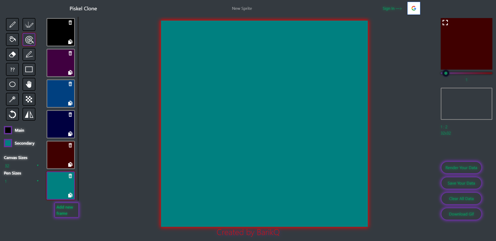
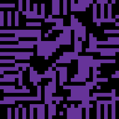
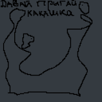
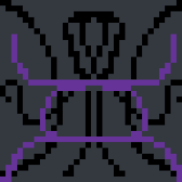

By Using This app You can Create Some Cool Stuff Like this:
- 
- 
- 
Live Preview
Check a preview of your animation in real time as you draw. Adjust the frame delay on the fly


Google Sign In
No need to remember yet another password, just use your Google account to sign in
Export to GIF format
You can export Your animation to local files and share it with friends later!


Open
This project is also open source just like original piskel
(Below You can find link's to both sources)